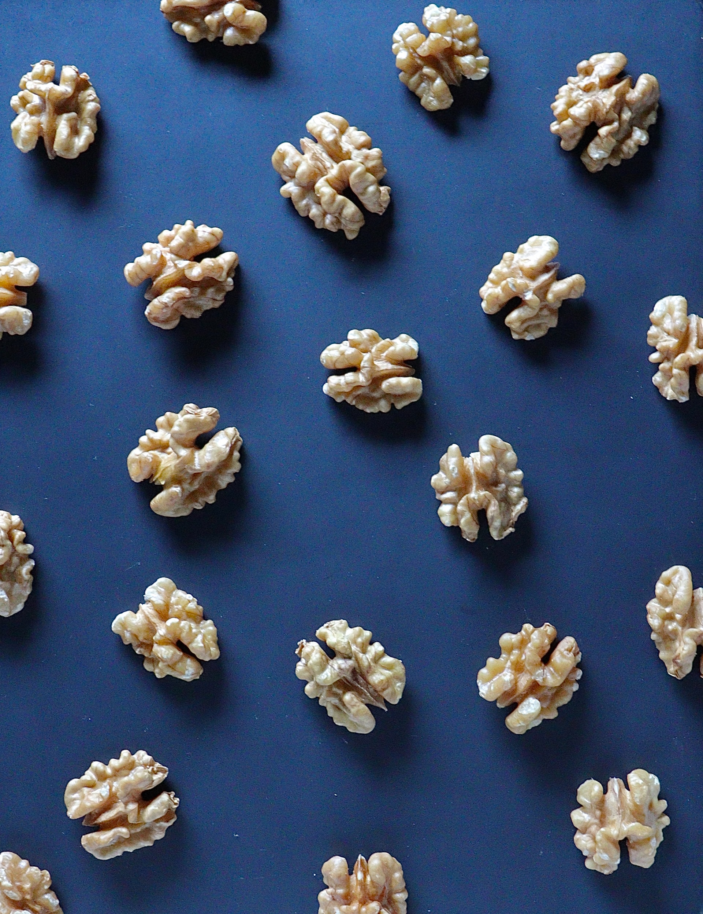

Consultancy
Assessing cognitive functioning and cognitive skills.
Evaluating functional neuroimaging data.
Trusted by Biotrial .
EEG is an easy, cheap and mobile tool for discovering the biological roots of human behaviors.
Extended reality platforms render lab research closer to ecological situations, but also enhance the user's engagement with the task at hand.
The way we move our eyes can reveal a lot about who we are, and even more on how our brain works! My recent research links eye movements with brain functioning and behaviors.
How fast, precise, and accurate can you be? My research has always had a soft spot for behavior analysis.
Assessing cognitive functioning and cognitive skills.
Evaluating functional neuroimaging data.
Trusted by Biotrial .
Researcher (2024-now)
- Royal Military Academy, Brussels [Belgium]
Postdoctoral Researcher (2022-2024)
- Center for Research in Cognition and Neurosciences, Université Libre de Bruxelles [Belgium]
Supervisor: Prof. Axel Cleeremans
Postdoctoral Researcher (2019-2022)
- UMR 1329 STEP, University of Strasbourg [France]
Supervisor: Prof. MD Anne Giersch
PhD in Psychology (2016-2019)
- School of Psychology, University of Plymouth [UK]
Supervisors: Prof. Jeremy Goslin & Prof. Angelo Cangelosi
MSc in Cognitive Science (2014-2015)
- Grenoble Institute of Technology [France]
Supervisor: Prof. Gérard Bailly
MSc in Cognitive Psychology (2013-2014)
- Grenoble-Alpes University [France]
Supervisor: Prof. Stéphane Rousset
BSc in Psychology (2010-2013) - University of Strasbourg [France]
High-school degree in engineering sciences (2008-2010) - Altkirch [France]
Electrician diploma (2006-2008) - Altkirch [France]
